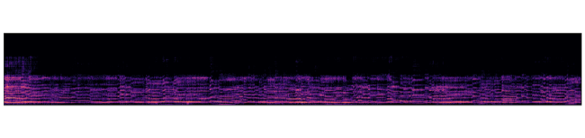
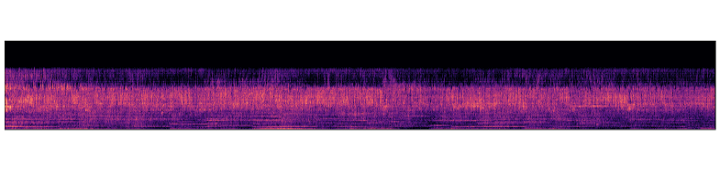
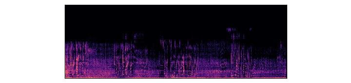
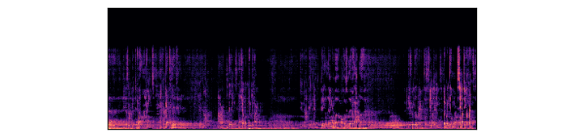
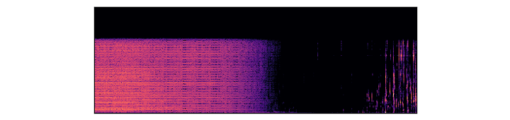
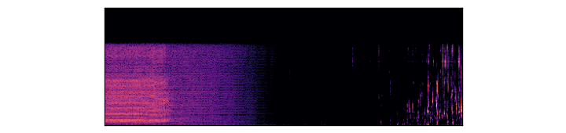
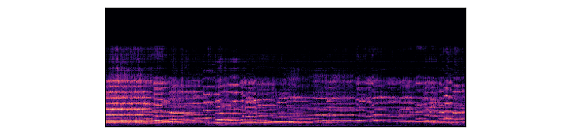
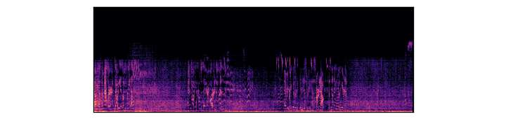
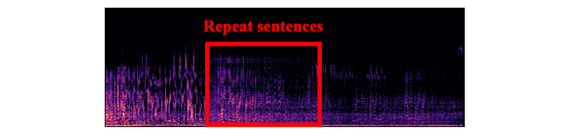
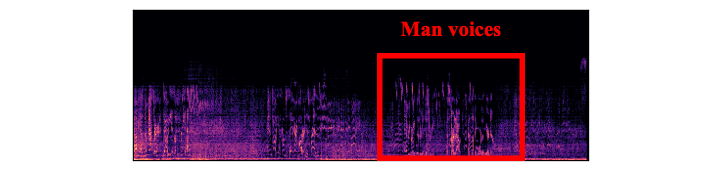

InfiniteAudio: Infinite-length Audio Generation with Consistent Acoustic Attributes
Under Review
Overall pipeline for InfiniteAudio
Abstract
This work aims to generate long-duration audio while preserving acoustic coherence, utilizing existing text-conditional audio generation models through diffusion-based approaches. Current diffusion models, however, encounter significant challenges in generating long audio sequences due to memory constraints, as output size scales with input length. While one possible solution is to concatenate short clips, this often leads to inconsistencies due to a lack of shared temporal information across segments.
To address these challenges, we propose InfiniteAudio, a novel inference technique designed to generate long audio with consistent acoustic attributes. Our method is based on three key components. First, we implement a curved denoising approach with a fixed-size input, enabling theoretically infinite audio generation while maintaining a constant memory footprint. Second, we introduce conditional guidance alternation, a mechanism that enhances intelligibility in long speech generation. Finally, initial self-attention features are shared across future frames to maintain temporal coherence.
The effectiveness of InfiniteAudio is demonstrated through comprehensive comparisons with existing text-to-audio generation baselines.
Description:"A hammer is hitting a wooden surface."
B. VoiceLDM + InfiniteAudio
VoiceLDM (10s)
InfiniteAudio (2m)

Description:"A violin playing a heartfelt melody."
VoiceLDM (10s)
InfiniteAudio (2m)

Description:"Birds chirping"
VoiceLDM (10s)
InfiniteAudio

Description:"She is talking in a park."
Content:"Dobby has no master. Dobby is a free elf! And Dobby has come to save Harry Potter and his friends. Every great wizard in history has started out as nothing more than we are now. Can you tell me where I might find platform Nine and Three-Quarters?"
VoiceLDM (10s)
InfiniteAudio

Description:"A man is speaking in a cathedral."
Content:"Dobby has no master. Dobby is a free elf! And Dobby has come to save Harry Potter and his friends. It takes a great deal of Bravery to stand up to your Enemies, but a great deal more to stand up to your Friends."
C. Ablation Study
Strategies on selecting sampling steps.
InfiniteAudio w/ equal timesteps.

InfiniteAudio w/ middle focused timesteps.
InfiniteAudio w/ last focused timesteps.

InfiniteAudio w/ initial focused timesteps.

Description:"A violin playing a heartfelt melody."
Ablation Study on content separation and QKV sharing.
InfiniteAudio

InfiniteAudio w/o separation.

InfiniteAudio w/o QKV sharing.

Description:"She is talking in a park."
Content:"Dobby has no master. Dobby is a free elf! And Dobby has come to save Harry Potter and his friends. Every great wizard in history has started out as nothing more than we are now."